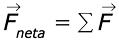
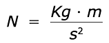
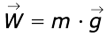
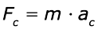
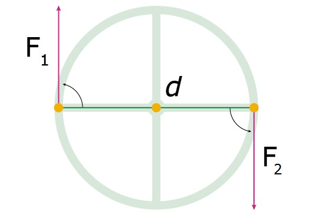
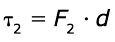
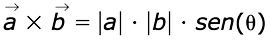
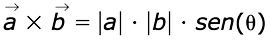

El movimiento de traslación, concretamente el movimiento rectilíneo, tanto uniforme como acelerado, es el movimiento más simple. Hasta el momento se han hecho aproximaciones netamente cinemáticas, es decir, se han estudiado sin importar las causas que los producen. En este capítulo estudiaremos las leyes que explican por qué un cuerpo se mueve de cierta manera o de otra, es decir abordaremos las leyes que rigen la dinámica de los cuerpos, las cuales fueron postuladas por el científico inglés Isaac Newton (1642-1727).
-
01
Leyes de Newton
Open or CloseIsaac Newton formuló los principios que permiten explicar las causas del movimiento de los cuerpos, desde el movimiento de los planetas hasta el funcionamiento de máquinas como la palanca o la polea.
Como se estudió en capítulos anteriores, a partir de los diagramas de cuerpo libre se puede determinar la fuerza neta o fuerza resultante, correspondiente a la suma vectorial de todas las fuerzas que actúan sobre el objeto:
Diagramas de cuerpo libre
Todas las fuerzas que actúan sobre un objeto pueden ser ubicadas desde el origen de un sistema de coordenadas o representación vectorial denominado diagrama de cuerpo libre o diagrama de fuerzas.
Para su elaboración es necesario tener en cuenta la dirección y la magnitud de cada uno de los vectores-fuerza. Preferiblemente, se utiliza una escala que permita comparar las magnitudes de los vectores y realizar la suma de los mismos para obtener la fuerza neta.
La fuerza neta juega un papel muy importante dentro de las leyes de Newton, pues si las fuerzas se encuentran equilibradas, es decir, si la fuerza neta es nula, se está en presencia de un fenómeno que se explica por medio de la primera Ley de Newton. Por el contrario, si la fuerza neta es diferente de cero, se cumple la segunda Ley de Newton.
Profundiza
01.1Primera ley de Newton: ley de la inercia
Esta ley explica qué le sucede a un objeto cuando la resultante de todas las fuerzas externas que actúan sobre él es nula.
La primera ley de Newton
Si sobre un cuerpo no actúa ninguna fuerza, o si la sumatoria de todas las fuerzas que actúan sobre este cuerpo es igual a cero:

De la primera ley de Newton se deduce que una fuerza es la causa capaz de provocar un cambio de velocidad en un cuerpo, es decir, una aceleración.
De acuerdo con esto, un objeto en equilibrio podrá encontrarse en dos estados: estar en reposo o tener un movimiento rectilíneo uniforme.
La primera ley de Newton postula que un cuerpo no puede cambiar por sí solo su estado de movimiento o de reposo, a menos que actúe una fuerza externa sobre él que modifique su velocidad. Dicho de otra forma, un objeto en movimiento no se detiene de forma natural si no se aplica una fuerza externa sobre él. Por ejemplo, un balón que se desliza con una velocidad constante sobre una superficie comenzará a frenarse debido a la fricción que actúa sobre él, de lo contrario, continuaría moviéndose con movimiento rectilíneo uniforme.
Las fuerzas que actúan sobre el cuerpo de la imagen están compensadas entre sí. Por ejemplo, la tensión T está equilibrada con la componente horizontal del peso Wx, al igual que la fuerza normal N con la componente vertical del peso Wy. Como el sistema se encuentra en equilibrio, el cuerpo podría estar en reposo o moviéndose a lo largo del plano inclinado.
Así, la inercia expresa la tendencia de un cuerpo a mantenerse en el estado de movimiento en el que se encuentra a menos que una fuerza externa actúe sobre él y lo modifique. Por tanto, si esas fuerzas externas que actúan directamente sobre el cuerpo se cancelan o suman un total de cero, el cuerpo se mantiene en reposo o movimiento rectilíneo uniforme con respecto a un sistema de medición. Para la situación anterior de plano inclinado, al aplicar la primera ley de Newton se tienen las siguientes fuerzas actuando sobre la masa ubicada en el plano inclinado:
Practica
01.2La segunda ley de Newton
Esta ley explica qué le sucede a un objeto cuando las fuerzas que se ejercen sobre él no se encuentran equilibradas, es decir, cuando la fuerza resultante tiene un valor distinto de cero.
La segunda ley de Newton
La aceleración de un objeto es directamente proporcional a la fuerza neta que actúa sobre él e inversamente proporcional a su masa.
Además, la dirección de la aceleración es igual a la de la fuerza neta. Igualmente, una misma fuerza neta aplicada sobre cuerpos de masas distintas produce aceleraciones diferentes.
Dicho enunciado se expresa mediante la siguiente ecuación:
Donde Fneta es la fuerza neta (N); m la masa del cuerpo (kg) y a la aceleración (m/s2).
La masa (m) es la constante de proporcionalidad y es una característica de cada cuerpo. La masa es una propiedad de los cuerpos que mide su inercia, es decir, su resistencia a cambiar de velocidad. La fuerza que ejercemos para mover una caja llena de libros es mucho mayor que la que aplicaríamos si la caja estuviera vacía. Debido a que la masa de la caja llena es mayor que la de la caja vacía, su inercia es mayor.
Las fuerzas que actúan sobre el sistema representado en la imagen se encuentran en desequilibrio en el eje paralelo al plano, ya que la tensión (T) debe ser menor que la suma de la fuerza de fricción y la componente del peso (frM + Mg sen(?)) en el eje x. Por tanto, el objeto está acelerado hacia abajo del plano inclinado.
Las unidades de fuerza
De la ecuación para la segunda ley de Newton se deduce la definición de la unidad de fuerza en el Sistema Internacional de Unidades (SI): un newton (N) es la fuerza que, aplicada a una masa de un kilogramo, le produce una aceleración de 1 m/s2.
La segunda ley de Newton y el peso
Al aplicar la segunda ley de Newton para un cuerpo en caída libre en el vacío, la aceleración (a) se sustituiría por la aceleración de la gravedad (g), y la única fuerza actuante sería el peso (W).
Se encuentra así una correspondencia entre la segunda ley de Newton y la expresión para el peso deducida de la ley de gravitación universal.
01.3La tercera ley de Newton: ley de acción y reacción
Esta ley explica que las fuerzas son interacciones, es decir, acciones recíprocas entre pares de objetos.
Acción-reacción
Cuando un cuerpo ejerce una fuerza (acción) sobre otro, este ejercerá sobre el primero otra fuerza (reacción) de igual magnitud y dirección, pero de sentido contrario.
Los dos procesos (acción y reacción) ocurren simultáneamente y las fuerzas existen mientras dura la interacción. Ambas fuerzas siempre actúan sobre objetos distintos, por eso no se anulan a pesar de tener la misma dirección y magnitud, pero sentidos opuestos.
De acuerdo con la tercera ley de Newton, cuando sostenemos un objeto en muestra mano ejercemos una fuerza hacia arriba para sostenerlo (acción); sin embargo, a su vez el objeto ejerce una fuerza sobre nuestra mano (reacción). Se dice entonces que estas fuerzas forman un par acción-reacción.
Otro ejemplo de la aplicación de la tercera ley de Newton se verifica en el funcionamiento de los cohetes. El cohete empuja hacia atrás los gases de la combustión y estos reaccionan aplicándole una fuerza que lo impulsa hacia adelante.
Al poner en marcha el motor, el cohete ejerce una gran fuerza hacia atrás al expulsar los gases de la combustión, los cuales, a su vez, ejercerán otra igual y contraria (hacia adelante) que lo hará despegar.
Otra situación en la que se ve reflejada la tercera ley de Newton es durante un choque entre dos objetos A y B. La fuerza con la que el objeto A impacta al objeto B es igual en magnitud a la fuerza con la que el objeto B impacta al A, pero en sentido opuesto. Esto se cumple independientemente de la masa y el tamaño que posea cada uno de los cuerpos.
La reacción del peso
Cuando un objeto está en reposo, apoyado sobre una superficie horizontal, las fuerzas actuantes sobre él son el peso y la normal. Sin embargo, estas dos interacciones no forman un par acción-reacción, pues estarían actuando sobre el mismo cuerpo, incumpliendo la tercera ley de Newton.
El peso es la fuerza de atracción que ejerce el planeta Tierra sobre un objeto (acción), luego la reacción corresponde a la fuerza con que el objeto atrae a la Tierra.
01.4Consolidación
Actividades para consolidar lo que has aprendido en esta sección.
-
02
La fuerza centrípeta
Open or CloseUn cuerpo que se desplaza en una trayectoria circular está sometido a la acción de una fuerza centrípeta.
Recuerda
En un movimiento circular uniforme, la velocidad lineal cambia de dirección constantemente. Este cambio de velocidad en el tiempo implica que existe una aceleración perpendicular a la dirección de la velocidad, conocida como aceleración centrípeta (dirigida hacia el centro de giro).
La aceleración centrípeta solo modifica la dirección, pero no la magnitud de la velocidad.
De acuerdo con la segunda ley de Newton, toda fuerza neta distinta de cero provoca una aceleración. En el caso de un movimiento circular, la fuerza centrípeta FC es la responsable de que exista la aceleración centrípeta aC.
Cualquier movimiento circular requiere de una fuerza dirigida hacia el centro de curvatura para mantener el móvil en una trayectoria curvilínea. Si no existiera dicha fuerza externa, según el enunciado de la primera ley de Newton, la trayectoria del cuerpo debería ser rectilínea. Por tanto, la fuerza centrípeta es la que hace que el móvil describa una trayectoria circular.
Por ejemplo, si atamos una piedra al extremo de una cuerda y la empezamos a girar, la fuerza que mantiene a la piedra en movimiento circular es la tensión, es decir, dicha tensión actúa como la fuerza centrípeta en esta situación. Si la cuerda llegara a romperse durante el movimiento, la piedra seguiría moviéndose por una trayectoria rectilínea tangente a la circunferencia en el punto de ruptura.
Al hacer girar una piedra atada al extremo de una cuerda, la tensión actúa como la fuerza centrípeta. En el momento en que la cuerda se rompe, la masa continúa con la velocidad lineal que llevaba en ese instante siguiendo una trayectoria rectilínea tangente a la circunferencia.
La magnitud de la aceleración centrípeta se calcula mediante la siguiente ecuación:
Donde: v representa la velocidad lineal o tangencial del cuerpo, ? la velocidad angular y R el radio de la circunferencia descrita.
Por tanto, de acuerdo con la segunda ley de Newton, la fuerza centrípeta se expresa como:
En las curvas, la fuerza de fricción entre las llantas y el pavimento juega un papel muy importante, pues actúa como fuerza centrípeta permitiendo que el carro pueda dar el giro en la porción de trayectoria circular. En las curvas, las vías además presentan cierta inclinación llamada peralte, el cual ayuda a mantener la estabilidad del vehículo mientras las recorre, para evitar que se deslice y el carro se salga de la trayectoria.
02.1Consolidación
Actividades para consolidar lo que has aprendido en esta sección.
-
03
El torque o momento de una fuerza
Open or CloseUn sistema formado por dos fuerzas paralelas de la misma intensidad y sentidos contrarios constituye un par de fuerzas. En estos sistemas, la fuerza resultante es nula.
Al girar el volante de un carro, el conductor aplica un par de fuerzas (F1 y F2), que son dos fuerzas paralelas de la misma magnitud pero con sentidos opuestos.
Aunque la resultante de las fuerzas del par es nula,
se produce una rotación, porque los torques o momentos de cada fuerza del par, con respecto al punto cero O, suman su capacidad de producir un giro.
Profundiza
03.1El torque
El torque o momento que caracteriza al par de fuerzas ? se calcula a partir del producto vectorial entre la magnitud de las fuerzas implicadas y la distancia que las separa; su magnitud será:
Por lo que para el par de fuerzas F1 = F2 se tiene que los momentos ?1 = ?2. Las unidades de ? en el Sistema Internacional (SI) son Newton metro (N m).
Recuerda
El producto vectorial implica dos vectores que forman un plano y dan como resultado un tercer vector perpendicular a estos:
 
En esta expresión a y b son vectores, |a| y |b| son las correspondientes magnitudes y ? es el ángulo que forman ambos vectores.
Por tanto, el torque o momento es una magnitud vectorial y siempre se dirige en dirección perpendicular al plano formado por las dos fuerzas involucradas y la distancia que las separa. El punto cero O es usualmente elegido de manera que coincida con el eje respecto al cual el objeto está rotando. Por ejemplo, la bisagra de una puerta o el punto central en una balanza de dos brazos.
Como se puede observar, solo las fuerzas que actúan en el plano perpendicular al eje de rotación contribuyen al torque del sistema. Con esta condición, un cuerpo puede rotar en dos posibles direcciones alrededor del eje seleccionado:
- Cuando rota en sentido contrario a las manecillas del reloj el torque generado por la fuerza correspondiente se toma como dirección positiva.
- Cuando rota en el mismo sentido de las manecillas del reloj el torque será negativo.
El punto O es elegido en el eje de rotación de la balanza. Solo las fuerzas perpendiculares al plano de la tabla, en este caso los pesos de los dos objetos W1 y W2, contribuyen al torque, es decir, a la rotación de la balanza.
03.2El equilibrio de torques y palancas
Un cuerpo se encuentra en equilibrio cuando no se desplaza ni gira (rota), es decir, se encuentra en condiciones estáticas. Para que el cuerpo se encuentre en equilibrio, las fuerzas que actúan sobre él deben cumplir dos condiciones:
- No debe actuar ninguna fuerza sobre el objeto, o bien,
la sumatoria de las fuerzas que actúan debe ser
cero, es decir, la resultante debe ser nula. Esta condición evita el desplazamiento del cuerpo
(como lo afirma la primera ley de Newton).
- Un objeto puede girar sin desplazarse. Para que esto
no ocurra, la sumatoria de los torques o momentos de las fuerzas que actúan sobre él debe ser también nula.
03.2.1El equilibrio en máquinas simples: la palanca
La palanca es una máquina simple utilizada para transmitir una fuerza de un punto a otro, aumentando su intensidad. Consiste en una barra rígida que gira alrededor de un punto de apoyo o fulcro. La fuerza que aplicamos se conoce como potencia y la fuerza que ejerce el objeto se denomina resistencia.
Existen tres tipos de palancas según la posición del punto de apoyo respecto a los puntos de aplicación de la resistencia y la potencia.
Clasificación de las palancas según la ubicación del fulcro.
Los tipos de palancas Tipo de palanca Ubicación del fulcro Ejemplo Primer género Entre la potencia y la resistencia. Balancín Segundo género En un extremo y la resistencia se encuentra el fulcro y la potencia. Carretilla Tercer género En un extremo y la potencia se encuentra entre el fulcro y la resistencia. Caña de pescar Cuando se alcanza el equilibrio, la fuerza resultante es nula (?F = 0), igual que el torque (o momento) resultante (?? = 0), ya que el momento de la potencia se iguala al de la resistencia. De esta manera puede deducirse la ley de equilibrio de la palanca:
En esta fórmula, P es la potencia, R es la resistencia, bp es el brazo de potencia y bR es el brazo de resistencia.
Equilibrio en una palanca de primer género.
Profundiza
03.3Consolidación
Actividades para consolidar lo que has aprendido en esta sección.
-
04
Competencias
Open or ClosePon a prueba tus capacidades y aplica lo aprendido con estos recursos.
-
Fin de unidad:
Open or Close
repaso